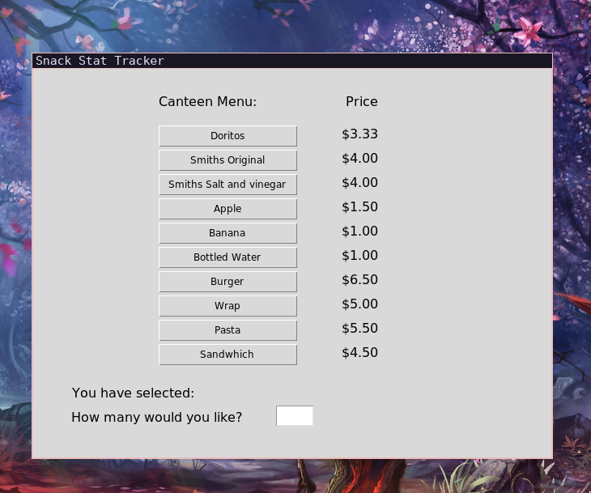
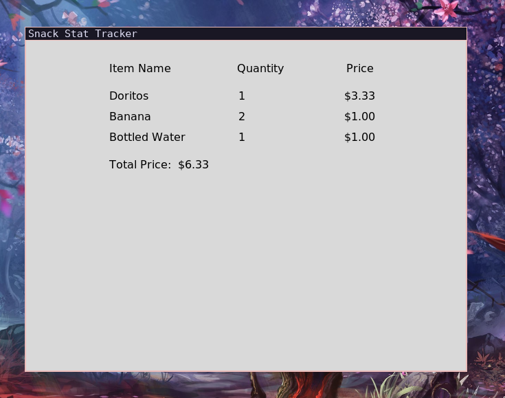

Snack Stat Tracker is a simple school canteen management system, and was the project that I produced in order to complete my first Year 11 Software Engineering assessment task. It allows customers to select items while enforcing real-time stock limits and calculating order totals on the fly. Through this project I demonstrated my understanding of the software development life cycle, algorithm design, programming structures, and testing and evaluation practices.
Software Development Life Cycle (SDLC)
I followed a structured approach for the assessment:
- Analysis & Design — Defined requirements and outlined the GUI layout and flow of data.
- Implementation — Started with a terminal prototype, then migrated to the full graphical interface.
- Testing — Conducted unit tests for stock validation and integration tests for the full purchase flow. Edge cases included zero stock, negative quantities, and bulk orders.
- Evaluation — Documented strengths (fast, reliable) and limitations (no persistent database, basic UI).
The accompanying documentation includes a detailed flowchart showing the interaction between the main menu, order processing, and stock updating logic.
Key Features
- Real-time Stock Management — The system prevents the user from over purchasing by checking the current stock levels before processing their order.
- Dynamic Order Total — Automatically calculates and displays the running total as items are selected.
- Simple & Intuitive GUI — Includes buttons for each item, quantity input, and a clear program flow.
- Personalised Data — Items, prices, and initial stock levels are easily modified through a custom configuration file.
- Receipt Generation — Displays a summary of the purchase upon checkout.
Technical Implementation
The application is structured around a main window with frames for the item list and order summary.
- Data Structure — A list of dictionaries (obtained from the configuration file) holds each snack's name, price, and current stock level.
- GUI Components — Buttons for item selection, entry widgets for quantity input, and labels that update dynamically for order totals.
- Core Logic — Functions handle adding items to the cart, validating stock, updating totals, and resetting the order.
- Error Handling — Detailed messages when stock is insufficient or invalid quantities are entered.
I used Python's Tkinter library as it is a commonly used library for basic GUI work and has an intuitive layout system.


Main interface showing available items and live order total.
Challenges Encountered
- Managing state across the GUI (updating multiple labels and lists in real-time).
- Designing an intuitive layout that didn't feel cluttered.
- Balancing simplicity with functionality within the time constraints of the assessment.
I personally enjoyed the development of this project as it enabled me to develop my python programming ability, and forced me to really consider the relationship between the logic of the program, and the information that was displayed to the user.